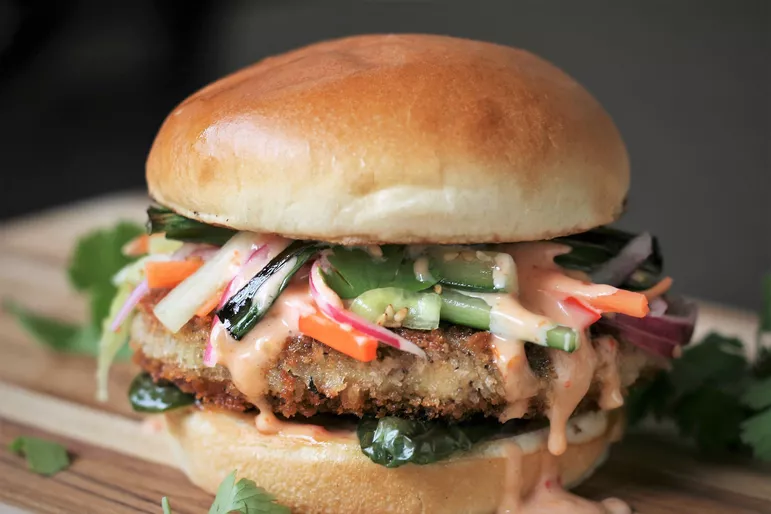

chicken-burger
Ingredients
- 3/4 cup rice vinegar
- 2 tablespoons water
- 2 teaspoons white sugar
- 1 small carrot, cut into matchsticks
- 2 teaspoons sesame seeds
- 1/4 large English cucumber, cut into matchsticks
- 1/4 small red onion, cut into 1/8-inch thick wedges

Steps:
- Whisk together 3/4 cups rice vinegar, water, sugar, and sesame seeds in a small bowl until sugar is dissolved. Add carrot, cucumber, and red onion, separating onion layers; toss to coat. Chill until ready to use, stirring occasionally to keep vegetables submerged in the brine.
- Whisk together mayonnaise, Thai sweet chile sauce, Sriracha, 1 teaspoon rice vinegar, and 1/4 teaspoon salt in a small bowl. Chill Bang Bang Sauce until ready to use.
- Preheat the oven to 400 degrees F (200 degrees C). Line a rimmed baking sheet with aluminum foil.
- Toss mushrooms with 1 tablespoon oil. Spread mushrooms out in a single layer on the prepared baking sheet. Roast mushrooms in the preheated oven for 15 minutes, stirring halfway through. Remove from oven and allow to cool.
- When ready to cook the burgers, set an oven rack about 6 inches from the heat source and preheat the oven's broiler. Place jalapeño halves, cut side down, and green onions on a baking sheet. Drizzle with 1 teaspoon oil.
- Broil vegetables until charred, turning halfway through, about 10 minutes. Set aside.
- Meanwhile, preheat a large cast iron skillet over medium-high heat. Brush skillet with 1 teaspoon oil and toast brioche buns, cut side down, until lightly browned, 2 to 4 minutes; set aside.
- Lightly whisk eggs and water in a shallow dish. Add panko bread crumbs to a second dish. Gently dip burger patties into egg mixture, letting excess drip off. Press lightly into bread crumbs to coat both sides.